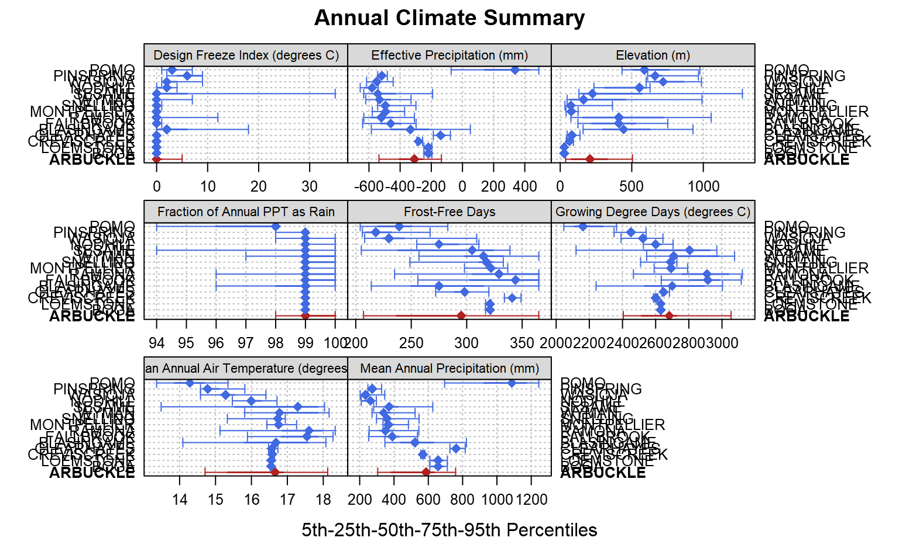
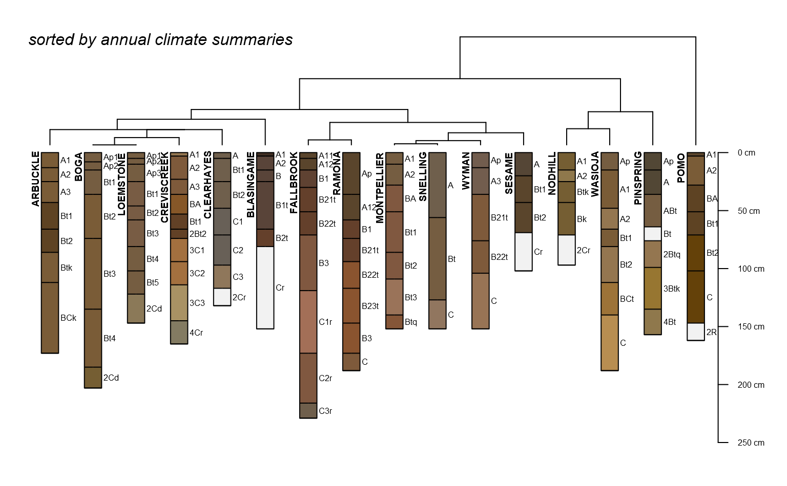

vizAnnualClimate.RdAnnual climate summaries for soil series, based on latticeExtra::segplot, based on 5th, 25th, 50th, 75th, and 95th percentiles. Input data should be from soilDB::fetchOSD.
vizAnnualClimate(climate.data, IQR.cex=1, s=NULL, s.col='firebrick', ...)
| climate.data | Annual climate summaries, as returned from |
|---|---|
| IQR.cex | scaling factor for bar representing interquartile range |
| s | a soil series name, e.g. "AMADOR", to highlight |
| s.col | color for highlighted soil series |
| ... | further arguments passed to |
This function was designed for use with soilDB::fetchOSD. It might be possible to use with other sources of data but your mileage may vary.
a list with the following elements:
lattice object (the figure)
clustering object returned by cluster::diana
D.E. Beaudette
# \donttest{ if(requireNamespace("curl") & curl::has_internet() & require(soilDB) & require(aqp) & require(latticeExtra) ) { # soil series of interest soil <- 'ARBUCKLE' # get competing series sdata <- fetchOSD(soil, extended = TRUE) # get competing series' data sdata.competing <- fetchOSD(c(soil, sdata$competing$competing)) # only use established series idx <- which(sdata.competing$series_status == 'established') # subset as needed if(length(idx) < length(sdata.competing)) { sdata.competing <- sdata.competing[idx, ] } # now get the extended data sdata.competing.full <- fetchOSD(site(sdata.competing)$id, extended = TRUE) # extract SPC spc <- sdata.competing.full$SPC # full set of series names s.names <- unique(site(spc)$id) # todo: probably better ways to do this... # note: need to load lattice for this to work trellis.par.set(plot.line=list(col='RoyalBlue')) # control center symbol and size here res <- vizAnnualClimate(sdata.competing.full$climate.annual, s=soil, IQR.cex = 1.1, cex=1.1, pch=18) # plot figure print(res$fig) # check clustering str(res$clust) # do something with clustering par(mar=c(0,0,1,1)) plotProfileDendrogram(spc, clust = res$clust, scaling.factor = 0.075, width = 0.2, y.offset = 0.5) mtext('sorted by annual climate summaries', side = 3, at = 0.5, adj = 0, line = -1.5, font=3) }#> List of 7 #> $ order : int [1:16] 1 3 7 5 4 2 6 12 8 14 ... #> $ height : num [1:15] 1.977 0 0.944 1.977 3.311 ... #> $ dc : num 0.846 #> $ merge : int [1:15, 1:2] -3 -8 2 -6 1 3 5 -1 -9 4 ... #> $ diss : 'dissimilarity' num [1:120] 2.05 1.43 1.53 1.78 3.34 ... #> ..- attr(*, "Labels")= chr [1:16] "ARBUCKLE" "BLASINGAME" "BOGA" "CLEARHAYES" ... #> ..- attr(*, "Size")= int 16 #> ..- attr(*, "Metric")= chr "euclidean" #> $ call : language diana(x = daisy(climate.data.wide[, -1], stand = TRUE)) #> $ order.lab: chr [1:16] "ARBUCKLE" "BOGA" "LOEMSTONE" "CREVISCREEK" ... #> - attr(*, "class")= chr [1:2] "diana" "twins"# }